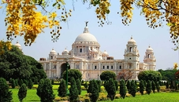
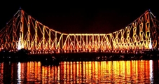
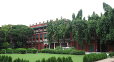

Top sights in Kolkata
Victoria Memorial
The incredible Victoria Memorial is a vast, beautifully proportioned festival of white marble: think US Capitol meets Taj Mahal. Had it been built for a beautiful Indian princess rather than a colonial queen, this domed beauty flanking the southern end of the Maidan would surely be considered one of India’s greatest buildings. Commissioned by Lord Curzon, then Viceroy of India, it was designed to commemorate Queen Victoria’s demise in 1901, but construction wasn’t completed until 20 years after her death. Inside, highlights are the soaring central chamber and the Calcutta Gallery, an excellent, even-handed exhibition tracing the city’s colonial-era history. Even if you don’t want to go in, the building is still worth admiring from afar: there are magnificently photogenic views across reflecting ponds from the northeast and northwest.
Howrah Bridge
Howrah Bridge is a 705m-long abstraction of shiny steel cantilevers and rivets, which serves as a carriageway of nonstop human and motorised traffic across the Hooghly River. Built during WWII, it’s one of the world’s busiest bridges and a Kolkatan architectural icon. Photography of the bridge is prohibited, but you might sneak a discreet shot from one of the various ferries that ply across the river to the vast 1906 Howrah train station.
Tagore’s House
The stately 1784 family mansion of Rabindranath Tagore has become a shrine-like museum to India’s greatest modern poet. Even if his personal effects don’t inspire you, some of the well-chosen quotations might spark an interest in Tagore’s deeply universalist and modernist philosophy. There’s a decent gallery of paintings by his family and contemporaries, and an exhibition on his literary, artistic and philosophical links with Japan. There's also a 1930 photo of Tagore with Einstein shot during a well-publicised meeting.